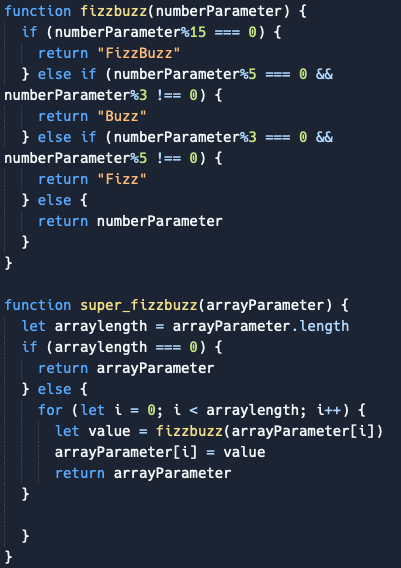
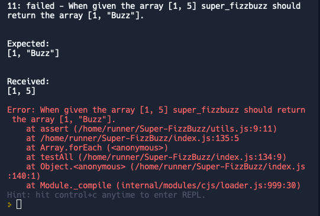
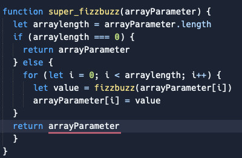

Aaron's Blog The blog of a programmer on web development
Problem solving
This blog tells my stories about problem solving.
A simple problem
I got a simple problem when I progressed JS-Gradebook challenge.
After finishing the basic challenge, an error about a function appeared in the stretch material. The stretch material was not mentioned anywhere, and I was confused about the function's aim.
I wanted to ask for help on Discord. After running through the chat history in the tech-questions channel, I realised someone else had asked this question. An instructor already clarified the aim of the function. Then I wrote the code, and it passed.
I felt confused throughout the process as the stretch material was not mentioned until an error appeared.
What I learned from this experience is that I should ask peers or coaches for clarification if something is not clear.
Elegantly solved a problem
I got a problem when I progressed the FizzBuzz challenge.
FizzBuzz is a classic programming exercise. The challenge asked us to write a program that prints out each number from the given numbers but for multiples of 3, print 'Fizz' instead of the number, and for multiples of 5, print 'Buzz'. For numbers that are multiples of both 3 and 5, print 'FizzBuzz'.
For example, given an array of numbers [1, 2, 3, 8, 10, 13, 15], it should print out [1, 2, Fizz, 8, Buzz, 13, FizzBuzz].
However, when I tested the code, an error showed up.
 
In the test example, given an array of numbers [1, 5], it printed out [1, 5] rather than the correct result [1, Buzz].
After reading the error message, it looked like the number 5 was not progressed. I used the 'for' loop in my code to progress every number in the array. So I guessed there might be something wrong with the loop. Then I used console.log() to check if every parameter returned the correct value. This made me realise the parameter i only return 0; however, in the loop, i should return 0 and then 1. This proved that the 'for' loop did not correctly.
At that moment, I was confused why a simple 'for' loop could not work, but I could still not figure out how to fix it, which upset me.
Then I used the rubber ducky method to verbalise the purpose of every line of the code. When I reached the last line of “return arrayParameter”, I realised it was in the 'for' loop. This stopped the code from running after processing the first number in the array. In other words, the second number was not progressed and returned to the original number in the array. So I moved the 'return arrayParameter' out of the 'for' loop, and it worked. Happy I made it after all the efforts.

From this experience, technically, I learned more about the relationship between the 'for' loop and 'return' (which will break the loop) and next time, I should be more careful with the location of 'return'. Another thing I learned is that the rubber ducky method could be beneficial to make you realise the error.
Reflect on how confident you feel using the problem-solving techniques/processes
It turns out that every time when there is a problem, I always use the following problem-solving techniques/processes in which I am more confident:
- Pseudocode
- Trying something
- Reading error messages
- Console.logging
- Googling
- Improving your process with reflection
If I cannot figure out the reason with the above techniques, then I will use the following, which I am less confident in however I am comfortable to use:
- Rubber ducky method
- Asking your peers for help
- Asking coaches for help